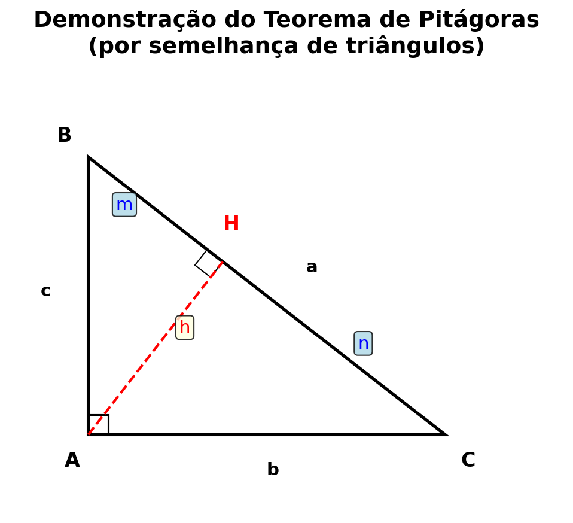
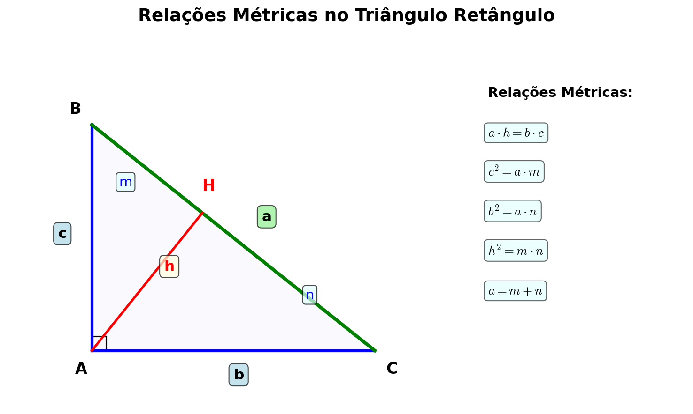

Trigonometria
A trigonometria é o ramo da matemática que estuda as relações entre os lados e os ângulos de triângulos. Surgiu da necessidade prática de medir distâncias inacessíveis e tem aplicações em astronomia, navegação, engenharia, física e muitas outras áreas. Neste resumo, estudaremos o Teorema de Pitágoras, as razões trigonométricas fundamentais e as relações métricas no triângulo retângulo.
1. Triângulo Retângulo e Teorema de Pitágoras
Definição 1.1 (Triângulo Retângulo)
Um triângulo é denominado triângulo retângulo quando possui um ângulo reto (medindo @90°@ ou @\frac{\pi}{2}@ radianos). Os lados que formam o ângulo reto são chamados de catetos, e o lado oposto ao ângulo reto é denominado hipotenusa.
Figura 1: Triângulo retângulo ABC com catetos b e c, e hipotenusa a
Na figura acima, temos um triângulo retângulo @ABC@ com:
- Ângulo reto em @A@: @\hat{A} = 90°@
- Catetos: @\overline{AB} = c@ e @\overline{AC} = b@
- Hipotenusa: @\overline{BC} = a@
- Ângulos agudos: @\hat{B}@ e @\hat{C}@, com @\hat{B} + \hat{C} = 90°@
Teorema 1.1 (Teorema de Pitágoras)
Em todo triângulo retângulo, o quadrado da hipotenusa é igual à soma dos quadrados dos catetos. Se @a@ é a hipotenusa e @b@, @c@ são os catetos, então:
@@ a^2 = b^2 + c^2 @@Demonstração (por semelhança de triângulos):
Considere o triângulo retângulo @ABC@ com ângulo reto em @A@. Trace a altura @h@ relativa à hipotenusa, dividindo-a em dois segmentos @m@ e @n@, onde @m + n = a@.
Figura 2: Demonstração do Teorema de Pitágoras por semelhança
Os triângulos @ABC@, @HBA@ e @HAC@ são semelhantes (possuem os mesmos ângulos). Da semelhança, obtemos as seguintes relações:
@@ \begin{align} \frac{c}{a} &= \frac{m}{c} \quad \Rightarrow \quad c^2 = a \cdot m \\ \frac{b}{a} &= \frac{n}{b} \quad \Rightarrow \quad b^2 = a \cdot n \end{align} @@Somando as duas equações:
@@ \begin{align} c^2 + b^2 &= a \cdot m + a \cdot n \\ &= a(m + n) \\ &= a \cdot a \\ &= a^2 \end{align} @@Portanto, @a^2 = b^2 + c^2@. @\square@
2. Razões Trigonométricas no Triângulo Retângulo
As razões trigonométricas são relações entre as medidas dos lados de um triângulo retângulo. Elas dependem apenas da medida do ângulo agudo considerado, não das dimensões do triângulo.
Definição 2.1 (Seno, Cosseno e Tangente)
Seja @ABC@ um triângulo retângulo com ângulo reto em @A@ e seja @\theta@ um dos ângulos agudos. Definimos:
- (i) Seno de @\theta@: @@\sin(\theta) = \frac{\text{cateto oposto}}{\text{hipotenusa}}@@
- (ii) Cosseno de @\theta@: @@\cos(\theta) = \frac{\text{cateto adjacente}}{\text{hipotenusa}}@@
- (iii) Tangente de @\theta@: @@\tan(\theta) = \frac{\text{cateto oposto}}{\text{cateto adjacente}}@@
Figura 3: Razões trigonométricas no triângulo retângulo
Na figura acima, considerando o ângulo @\theta@:
@@ \sin(\theta) = \frac{a}{c}, \quad \cos(\theta) = \frac{b}{c}, \quad \tan(\theta) = \frac{a}{b} @@Teorema 2.1 (Relação Fundamental da Trigonometria)
Para todo ângulo @\theta@, vale a identidade trigonométrica fundamental:
@@ \sin^2(\theta) + \cos^2(\theta) = 1 @@Demonstração:
Seja um triângulo retângulo com hipotenusa @c@ e catetos @a@ (oposto a @\theta@) e @b@ (adjacente a @\theta@). Pelo Teorema de Pitágoras:
@@ a^2 + b^2 = c^2 @@Dividindo ambos os lados por @c^2@:
@@ \begin{align} \frac{a^2}{c^2} + \frac{b^2}{c^2} &= \frac{c^2}{c^2} \\ \left(\frac{a}{c}\right)^2 + \left(\frac{b}{c}\right)^2 &= 1 \\ \sin^2(\theta) + \cos^2(\theta) &= 1 \end{align} @@@\square@
Corolário 2.1 (Outras Razões Trigonométricas)
Além das razões fundamentais, definimos também:
- (i) Cotangente: @@\cot(\theta) = \frac{1}{\tan(\theta)} = \frac{\cos(\theta)}{\sin(\theta)}@@
- (ii) Secante: @@\sec(\theta) = \frac{1}{\cos(\theta)}@@
- (iii) Cossecante: @@\csc(\theta) = \frac{1}{\sin(\theta)}@@
Teorema 2.2 (Relação entre Tangente, Seno e Cosseno)
Para todo ângulo @\theta@ (com @\cos(\theta) \neq 0@), vale:
@@ \tan(\theta) = \frac{\sin(\theta)}{\cos(\theta)} @@Demonstração:
Usando as definições:
@@ \begin{align} \frac{\sin(\theta)}{\cos(\theta)} &= \frac{\frac{\text{cateto oposto}}{\text{hipotenusa}}}{\frac{\text{cateto adjacente}}{\text{hipotenusa}}} \\ &= \frac{\text{cateto oposto}}{\text{hipotenusa}} \cdot \frac{\text{hipotenusa}}{\text{cateto adjacente}} \\ &= \frac{\text{cateto oposto}}{\text{cateto adjacente}} \\ &= \tan(\theta) \end{align} @@@\square@
3. Ângulos Notáveis (30°, 45° e 60°)
Alguns ângulos possuem valores trigonométricos que podem ser determinados geometricamente. Os mais importantes são @30°@, @45°@ e @60°@.
Definição 3.1 (Triângulo Equilátero e Ângulo de 30° e 60°)
Considere um triângulo equilátero de lado @\ell@. Ao traçar a altura relativa a um dos lados, obtemos dois triângulos retângulos congruentes, cada um com ângulos de @30°@, @60°@ e @90°@.
Figura 4: Triângulo 30-60-90 obtido de um triângulo equilátero
Neste triângulo retângulo:
- Hipotenusa = @\ell@
- Cateto menor (oposto a @30°@) = @\frac{\ell}{2}@
- Cateto maior (oposto a @60°@) = @\frac{\ell\sqrt{3}}{2}@
Portanto, as razões trigonométricas para @30°@ e @60°@ são:
@@ \begin{align} \sin(30°) = \frac{1}{2}, &\quad \cos(30°) = \frac{\sqrt{3}}{2}, \quad \tan(30°) = \frac{\sqrt{3}}{3} \\ \sin(60°) = \frac{\sqrt{3}}{2}, &\quad \cos(60°) = \frac{1}{2}, \quad \tan(60°) = \sqrt{3} \end{align} @@Definição 3.2 (Triângulo Isósceles Retângulo e Ângulo de 45°)
Considere um triângulo retângulo isósceles com catetos iguais a @\ell@. Os ângulos agudos medem ambos @45°@, e a hipotenusa mede @\ell\sqrt{2}@ (pelo Teorema de Pitágoras).
Figura 5: Triângulo 45-45-90 (triângulo retângulo isósceles)
As razões trigonométricas para @45°@ são:
@@ \sin(45°) = \frac{\sqrt{2}}{2}, \quad \cos(45°) = \frac{\sqrt{2}}{2}, \quad \tan(45°) = 1 @@Tabela de Valores Notáveis
Resumo dos valores das razões trigonométricas para os ângulos notáveis:
| Ângulo | @\sin@ | @\cos@ | @\tan@ |
|---|---|---|---|
| @30°@ | @\frac{1}{2}@ | @\frac{\sqrt{3}}{2}@ | @\frac{\sqrt{3}}{3}@ |
| @45°@ | @\frac{\sqrt{2}}{2}@ | @\frac{\sqrt{2}}{2}@ | @1@ |
| @60°@ | @\frac{\sqrt{3}}{2}@ | @\frac{1}{2}@ | @\sqrt{3}@ |
4. Relações Métricas no Triângulo Retângulo
Além do Teorema de Pitágoras, existem outras relações importantes entre os elementos de um triângulo retângulo.
Figura 6: Elementos do triângulo retângulo para relações métricas
Considere um triângulo retângulo @ABC@ com:
- Hipotenusa @a = \overline{BC}@
- Catetos @b = \overline{AC}@ e @c = \overline{AB}@
- Altura @h@ relativa à hipotenusa
- Projeções: @m@ (projeção de @c@ sobre a hipotenusa) e @n@ (projeção de @b@ sobre a hipotenusa)
Teorema 4.1 (Relações Métricas Fundamentais)
No triângulo retângulo descrito acima, valem as seguintes relações:
- (i) @a = m + n@ (soma das projeções)
- (ii) @h^2 = m \cdot n@ (altura é média geométrica das projeções)
- (iii) @b^2 = a \cdot n@ (cateto ao quadrado = hipotenusa × sua projeção)
- (iv) @c^2 = a \cdot m@ (cateto ao quadrado = hipotenusa × sua projeção)
- (v) @a \cdot h = b \cdot c@ (produto da hipotenusa pela altura = produto dos catetos)
Demonstração:
(ii) Os triângulos @AHB@ e @AHC@ são semelhantes ao triângulo @ABC@. Da semelhança entre @AHB@ e @CHA@:
@@ \frac{h}{n} = \frac{m}{h} \quad \Rightarrow \quad h^2 = m \cdot n @@(iii) e (iv) Da semelhança entre @ABC@ e @CAH@:
@@ \frac{b}{a} = \frac{n}{b} \quad \Rightarrow \quad b^2 = a \cdot n @@Analogamente, @c^2 = a \cdot m@.
(v) A área do triângulo retângulo pode ser calculada de duas formas:
@@ \text{Área} = \frac{b \cdot c}{2} = \frac{a \cdot h}{2} @@Portanto, @a \cdot h = b \cdot c@. @\square@
Corolário 4.1 (Expressão da Altura)
Da relação @a \cdot h = b \cdot c@ e do Teorema de Pitágoras, podemos expressar a altura @h@ em função dos catetos e da hipotenusa:
@@ h = \frac{b \cdot c}{a} = \frac{b \cdot c}{\sqrt{b^2 + c^2}} @@5. Exemplos Resolvidos
Exemplo 1 - Aplicação Direta do Teorema de Pitágoras
Enunciado: Uma escada de @5@ metros de comprimento está apoiada em uma parede vertical, com sua base distante @3@ metros da parede. Qual é a altura que a escada alcança na parede?
Solução:
Passo 1: Identificar os elementos do triângulo retângulo.
A situação forma um triângulo retângulo onde:
- Hipotenusa (escada) = @5@ m
- Cateto adjacente (distância da parede) = @3@ m
- Cateto oposto (altura na parede) = @h@ (desconhecido)
Passo 2: Aplicar o Teorema de Pitágoras.
@@ 5^2 = 3^2 + h^2 @@Passo 3: Resolver a equação.
@@ \begin{align} 25 &= 9 + h^2 \\ h^2 &= 25 - 9 \\ h^2 &= 16 \\ h &= 4 \text{ m} \end{align} @@Resposta: A escada alcança @4@ metros de altura na parede.
Exemplo 2 - Cálculo de Razões Trigonométricas
Enunciado: Em um triângulo retângulo, a hipotenusa mede @13@ cm e um dos catetos mede @5@ cm. Determine o seno, cosseno e tangente do ângulo oposto ao cateto de @5@ cm.
Solução:
Passo 1: Encontrar o cateto desconhecido usando o Teorema de Pitágoras.
@@ \begin{align} 13^2 &= 5^2 + c^2 \\ 169 &= 25 + c^2 \\ c^2 &= 144 \\ c &= 12 \text{ cm} \end{align} @@Passo 2: Identificar o ângulo @\theta@ (oposto ao cateto de @5@ cm).
Para este ângulo:
- Cateto oposto = @5@ cm
- Cateto adjacente = @12@ cm
- Hipotenusa = @13@ cm
Passo 3: Calcular as razões trigonométricas.
@@ \begin{align} \sin(\theta) &= \frac{\text{cateto oposto}}{\text{hipotenusa}} = \frac{5}{13} \\ \cos(\theta) &= \frac{\text{cateto adjacente}}{\text{hipotenusa}} = \frac{12}{13} \\ \tan(\theta) &= \frac{\text{cateto oposto}}{\text{cateto adjacente}} = \frac{5}{12} \end{align} @@Resposta: @\sin(\theta) = \frac{5}{13}@, @\cos(\theta) = \frac{12}{13}@ e @\tan(\theta) = \frac{5}{12}@.
Exemplo 3 - Uso de Ângulos Notáveis
Enunciado: Uma rampa faz um ângulo de @30°@ com o solo horizontal. Se a rampa tem @10@ metros de comprimento, qual é a altura vertical que ela alcança?
Solução:
Passo 1: Identificar os elementos.
Temos um triângulo retângulo onde:
- Ângulo = @30°@
- Hipotenusa (rampa) = @10@ m
- Cateto oposto (altura) = @h@ (desconhecido)
Passo 2: Usar a razão trigonométrica apropriada.
@@ \sin(30°) = \frac{h}{10} @@Passo 3: Substituir o valor de @\sin(30°) = \frac{1}{2}@.
@@ \begin{align} \frac{1}{2} &= \frac{h}{10} \\ h &= 10 \cdot \frac{1}{2} \\ h &= 5 \text{ m} \end{align} @@Resposta: A rampa alcança @5@ metros de altura vertical.
Exemplo 4 - Verificação da Relação Fundamental
Enunciado: Se @\sin(\alpha) = \frac{3}{5}@, determine @\cos(\alpha)@ sabendo que @\alpha@ é um ângulo agudo.
Solução:
Passo 1: Usar a relação fundamental da trigonometria.
@@ \sin^2(\alpha) + \cos^2(\alpha) = 1 @@Passo 2: Substituir @\sin(\alpha) = \frac{3}{5}@.
@@ \begin{align} \left(\frac{3}{5}\right)^2 + \cos^2(\alpha) &= 1 \\ \frac{9}{25} + \cos^2(\alpha) &= 1 \\ \cos^2(\alpha) &= 1 - \frac{9}{25} \\ \cos^2(\alpha) &= \frac{25 - 9}{25} \\ \cos^2(\alpha) &= \frac{16}{25} \end{align} @@Passo 3: Extrair a raiz quadrada (positiva, pois @\alpha@ é agudo).
@@ \cos(\alpha) = \frac{4}{5} @@Resposta: @\cos(\alpha) = \frac{4}{5}@.
Exemplo 5 - Relações Métricas: Altura Relativa à Hipotenusa
Enunciado: Em um triângulo retângulo, os catetos medem @6@ cm e @8@ cm. Calcule a altura relativa à hipotenusa.
Solução:
Passo 1: Calcular a hipotenusa pelo Teorema de Pitágoras.
@@ \begin{align} a^2 &= 6^2 + 8^2 \\ a^2 &= 36 + 64 \\ a^2 &= 100 \\ a &= 10 \text{ cm} \end{align} @@Passo 2: Usar a relação @a \cdot h = b \cdot c@.
@@ \begin{align} 10 \cdot h &= 6 \cdot 8 \\ 10h &= 48 \\ h &= \frac{48}{10} \\ h &= 4{,}8 \text{ cm} \end{align} @@Resposta: A altura relativa à hipotenusa mede @4{,}8@ cm.
Exemplo 6 - Problema com Ângulo de 60°
Enunciado: Do topo de um prédio, observa-se um ponto no solo com um ângulo de depressão de @60°@. Se o prédio tem @30@ metros de altura, qual é a distância horizontal do ponto observado até a base do prédio?
Solução:
Passo 1: Entender a geometria do problema.
O ângulo de depressão de @60°@ do topo do prédio corresponde a um ângulo de elevação de @60°@ do ponto no solo até o topo (ângulos alternos internos).
Passo 2: Identificar os elementos.
- Cateto oposto ao ângulo de @60°@ = @30@ m (altura do prédio)
- Cateto adjacente = @d@ (distância horizontal desconhecida)
Passo 3: Usar a tangente.
@@ \tan(60°) = \frac{30}{d} @@Passo 4: Substituir @\tan(60°) = \sqrt{3}@ e resolver.
@@ \begin{align} \sqrt{3} &= \frac{30}{d} \\ d &= \frac{30}{\sqrt{3}} \\ d &= \frac{30\sqrt{3}}{3} \\ d &= 10\sqrt{3} \approx 17{,}32 \text{ m} \end{align} @@Resposta: A distância horizontal é @10\sqrt{3}@ metros (aproximadamente @17{,}32@ m).
Exemplo 7 - Aplicação das Projeções
Enunciado: Em um triângulo retângulo, a hipotenusa mede @20@ cm e a projeção de um dos catetos sobre a hipotenusa mede @12@ cm. Calcule a medida desse cateto.
Solução:
Passo 1: Identificar a relação métrica apropriada.
Usamos a relação @c^2 = a \cdot m@, onde:
- @a = 20@ cm (hipotenusa)
- @m = 12@ cm (projeção do cateto @c@)
Passo 2: Aplicar a fórmula.
@@ \begin{align} c^2 &= 20 \cdot 12 \\ c^2 &= 240 \\ c &= \sqrt{240} \\ c &= \sqrt{16 \cdot 15} \\ c &= 4\sqrt{15} \approx 15{,}49 \text{ cm} \end{align} @@Resposta: O cateto mede @4\sqrt{15}@ cm (aproximadamente @15{,}49@ cm).
Exemplo 8 - Problema Contextualizado com Ângulo de 45°
Enunciado: Um cabo de aço está preso ao topo de um poste e ao solo, formando um ângulo de @45°@ com o solo. Se o cabo mede @20\sqrt{2}@ metros, qual é a altura do poste?
Solução:
Passo 1: Identificar os elementos.
Temos um triângulo retângulo com:
- Ângulo = @45°@
- Hipotenusa (cabo) = @20\sqrt{2}@ m
- Cateto oposto (altura do poste) = @h@
Passo 2: Usar o seno.
@@ \sin(45°) = \frac{h}{20\sqrt{2}} @@Passo 3: Substituir @\sin(45°) = \frac{\sqrt{2}}{2}@ e resolver.
@@ \begin{align} \frac{\sqrt{2}}{2} &= \frac{h}{20\sqrt{2}} \\ h &= 20\sqrt{2} \cdot \frac{\sqrt{2}}{2} \\ h &= \frac{20 \cdot 2}{2} \\ h &= 20 \text{ m} \end{align} @@Resposta: A altura do poste é @20@ metros.
6. Exercícios
- Em um triângulo retângulo, os catetos medem @9@ cm e @12@ cm. Calcule a medida da hipotenusa.
- A hipotenusa de um triângulo retângulo mede @25@ m e um dos catetos mede @7@ m. Determine a medida do outro cateto.
- Calcule o valor de @x@ na figura a seguir, sabendo que o triângulo é retângulo, a hipotenusa mede @x@ e os catetos medem @5@ e @12@.
- Em um triângulo retângulo, um dos ângulos agudos mede @30°@ e a hipotenusa mede @18@ cm. Calcule as medidas dos catetos.
- Se @\cos(\theta) = \frac{5}{13}@ e @\theta@ é um ângulo agudo, determine @\sin(\theta)@ e @\tan(\theta)@.
- Um avião decola fazendo um ângulo de @30°@ com a pista horizontal. Após percorrer @2000@ m em linha reta, qual é a altitude do avião?
- Calcule a altura relativa à hipotenusa em um triângulo retângulo cujos catetos medem @15@ cm e @20@ cm.
- A projeção de um cateto sobre a hipotenusa de um triângulo retângulo mede @9@ cm, e a hipotenusa mede @25@ cm. Calcule a medida desse cateto.
- Em um triângulo retângulo isósceles, cada cateto mede @10@ cm. Determine a medida da hipotenusa e as razões trigonométricas dos ângulos agudos.
- Uma pessoa de @1{,}70@ m de altura observa o topo de um edifício sob um ângulo de elevação de @60°@. Se a pessoa está a @30@ m de distância do edifício, qual é a altura total do edifício?
- Demonstre que @\tan(\theta) \cdot \cot(\theta) = 1@ para todo ângulo @\theta@ (com @\sin(\theta) \neq 0@ e @\cos(\theta) \neq 0@).
- Em um triângulo retângulo, a altura relativa à hipotenusa mede @6@ cm e divide a hipotenusa em dois segmentos de medidas @4@ cm e @9@ cm. Verifique se a relação @h^2 = m \cdot n@ é satisfeita.
- Um cabo está preso ao topo de um poste de @12@ m de altura e fixado no solo a @5@ m de distância da base do poste. Calcule o comprimento do cabo e o ângulo que ele forma com o solo.
- Se @\sin(\alpha) = \frac{2}{3}@, calcule o valor de @\frac{1 - \cos^2(\alpha)}{\sin^2(\alpha)}@.
- Em um triângulo retângulo, os catetos medem @a@ e @b@, e a hipotenusa mede @c@. Se a altura relativa à hipotenusa é @h@, mostre que @\frac{1}{h^2} = \frac{1}{a^2} + \frac{1}{b^2}@.